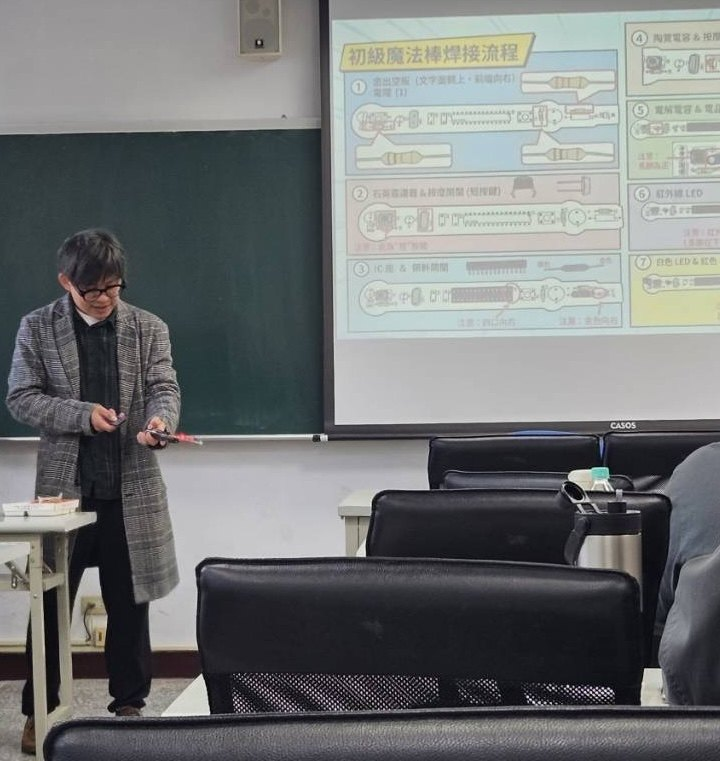

Courses I am prepared to teach 可授課程
Courses I can teach in English or Mandarin, drawing on my research and industry work.
可以中文或英文授課，內容結合我的研究與業界經驗。
Working with large real-world datasets in Python and SQL, from cleaning to decision-ready indicators.
Innovation systems and ecosystems, technology transfer, and how industries transform.
Industry analysis and strategy, illustrated with Taiwan's AI, biotech and green-technology sectors.
Using language models responsibly in research and business work, with audit trails and human review.
Patent search, landscaping and assignee matching for technology and competitor analysis.
Structuring management and policy choices with the analytic hierarchy process and related methods.
Teaching experience 教學經驗
- Teaching Assistant, National Yang Ming Chiao Tung University (2022–2024) — Strategic Management; Technology Innovation Management: Theory and Practice; Intellectual Property Management and Practice; Business Model Innovation and Entrepreneurship Management in Practice; The Practice and Case Study of Biotechnology Industry Management; Research Methods for the Management of Technological Innovation and Entrepreneurship; Exploring Robotic and Artificial Intelligent Systems; Seminar on Technology Management.
陽明交大八門管理與科技管理課程的教學助理（2022–2024）。 - Discussion-class tutor, Management (Feb–Jun 2023) — awarded Outstanding Teaching Assistant.
Management 討論課助教，獲陽明交大優秀教學助理。
Invited talks 受邀演講
- National Changhua University of Education, Department of Public Affairs and Civic Education (Nov 2025) — instructor, 「科技教育融入實作：魔法棒智慧財產權跨域素養培育」: a hands-on workshop combining building an electronic wand with intellectual-property literacy.
國立彰化師範大學公共事務與公民教育學系 114 年度精進師資素質與特色發展子計畫 8「科技教育融入實作：魔法棒智慧財產權跨域素養培育」講師。 - National Changhua University of Education, Department of Business Administration (Nov 2022) — invited lecture on research methods for theses, in the course 「管理決策資訊系統」.
國立彰化師範大學企業管理學系「管理決策資訊系統」課程演講：論文研究方法分享。
AI in teaching and research AI 融入教學與研究
TACIT
An application I built with my advisor's lab for AI-assisted qualitative coding. The model drafts, the researcher decides, and every revision is kept, so students can see how an AI suggestion was checked and corrected. Models can run locally, so interview data need not leave the machine.
與實驗室共同開發的 AI 輔助質性編碼工具：模型先編初稿，由研究者決定，並保留每一次修改，讓學生看得到 AI 的建議如何被檢查與修正；模型可在本機執行，訪談資料不必離開電腦。
Tutorials and manuals
I make my own video tutorials, operation slides and manuals for bibliometric and patent analysis, and use them to train junior members of the lab.
自製書目計量與專利分析的教學影片、操作簡報與手冊，用來帶實驗室學弟妹上手。
Course design
Each semester I help my advisor build and update course materials at the NYCU Institute of Management of Technology — syllabi, readings, weekly schedules and quality-assurance forms — including two new courses for spring 2027 on AI literacy for entrepreneurship and on entrepreneurship-ecosystem transformation.
每學期協助指導教授建置與更新陽明交大科技管理研究所的課程資料（課綱、書單、週次進度、品保表單），包括 115-2 新開的〈人工智慧素養導向之科技創新創業管理〉與〈科技創業生態系創新轉型〉。

Industry experience 業界與產學經驗
- Senior Engineer (tooling design), Jabil — Green Point Enterprises, Taichung (2014–2016) — mold development, mold cooling-channel design, hardware and CNC milling.
綠點高新科技股份有限公司（Jabil）資深工程師：模具開發、冷卻水路設計、五金與 CNC 銑削。 - System Application Engineer, Industrial Technology Research Institute (ITRI), Electronic and Optoelectronic System Research Laboratories (2023) — placed at 聯騏技研股份有限公司 for hardware–software integration of access-control and smart-lock products, under a Ministry of Economic Affairs semiconductor talent programme.
經濟部工業局「半導體產學研共育人才實務能力精進計畫」：工研院培訓後派駐聯騏技研，負責門禁與智慧鎖軟硬體整合。 - Project Engineer, Leadertek Precision Inc. (律廷科技), Taichung (2009–2012) — machining of ball screws and linear guideways in a cooperative-education programme.
鼎仕機構 律廷科技 建教合作專案工程師：滾珠螺桿與線性滑軌加工。 - Industry–academia collaboration with 青滕國際 (2021–2023) — during my MBA, with my advisor, a patent-landscape study for the company's secondary development of CATIA, carried out with its founder and general manager 許心俞; published in 北商學報 (2023).
碩士班期間與指導教授執行的產學合作：為青滕國際（創辦人兼總經理許心俞）使用的 CATIA 二次開發做專利佈局分析，成果發表於《北商學報》。 - Curator, TEDx NCUE (2020–2021) — curated and organized the event.
TEDx NCUE 策展人。 - Assistant Editor, Review of Global Management and Service Science (2022–)
期刊助理編輯。
International experience 國際經驗
Visiting researcher at University of Technology Sydney (2026) and Edinburgh Napier University (2024); visiting scholar at INGENIO (CSIC-UPV), València, from January 2027. I have given oral presentations in English at international conferences in the United States, the United Kingdom, Germany, the Netherlands, India, Spain and China.
曾任 University of Technology Sydney（2026）與 Edinburgh Napier University（2024）訪問學者，2027 年 1 月起赴西班牙 INGENIO (CSIC-UPV) 訪問；曾赴美國、英國、德國、荷蘭、印度、西班牙與中國的國際研討會以英文口頭發表。